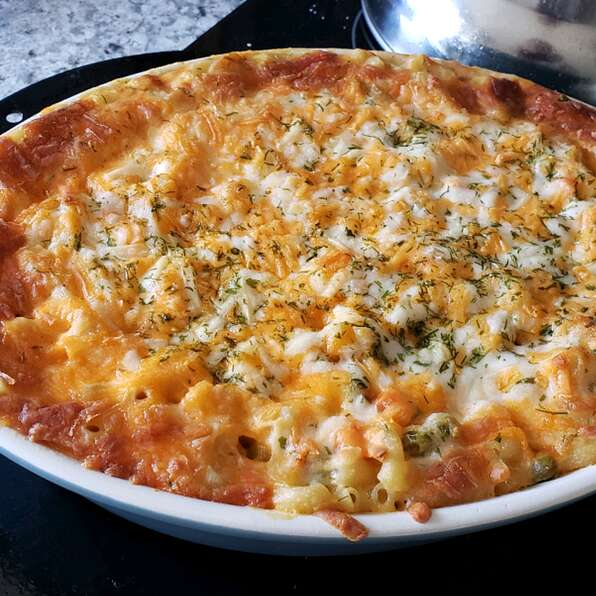

Steph's Tuna Casserole

Description
Dive into happiness and enjoy your stay. This heavenly dish is not for those looking to follow a strict diet. One bowl is not an option. Bite into the creamy and crunchy tuna macaroni cheese blend and find yourself.
Ingredients
- cooking spray
- 1 (16 ounce) package elbow macaroni
- 1 (10.75 ounce) can cream of chicken soup
- 1 cup grated Cheddar cheese
- 1 (5 ounce) can tuna packed in water
- 1/2 cup milk, or more to taste
- 2 tablespoons butter, softened
- 1/2 cup Italian-style bread crum
Steps
-
Preheat oven to 350 degrees F (175 degrees C). Prepare a casserole dish with cooking spray.
-
Bring a large pot of lightly salted water to a boil. Cook elbow macaroni in the boiling water until cooked through but firm to the bite, 8 minutes; drain.
-
Stir cooked elbow macaroni, cream of chicken soup, Cheddar cheese, tuna packed in water, milk, and butter together in a large bowl; pour into prepared baking dish. Sprinkle bread crumbs over macaroni mixture.
-
Bake in preheated oven until golden brown on top, 35 to 40 minutes.
Return To Recipes